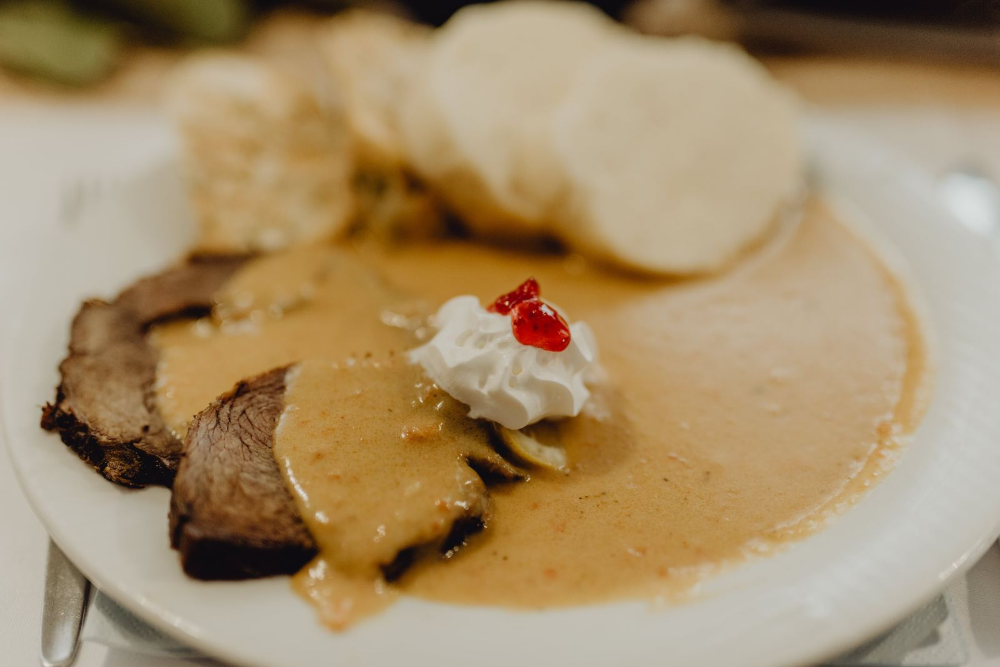
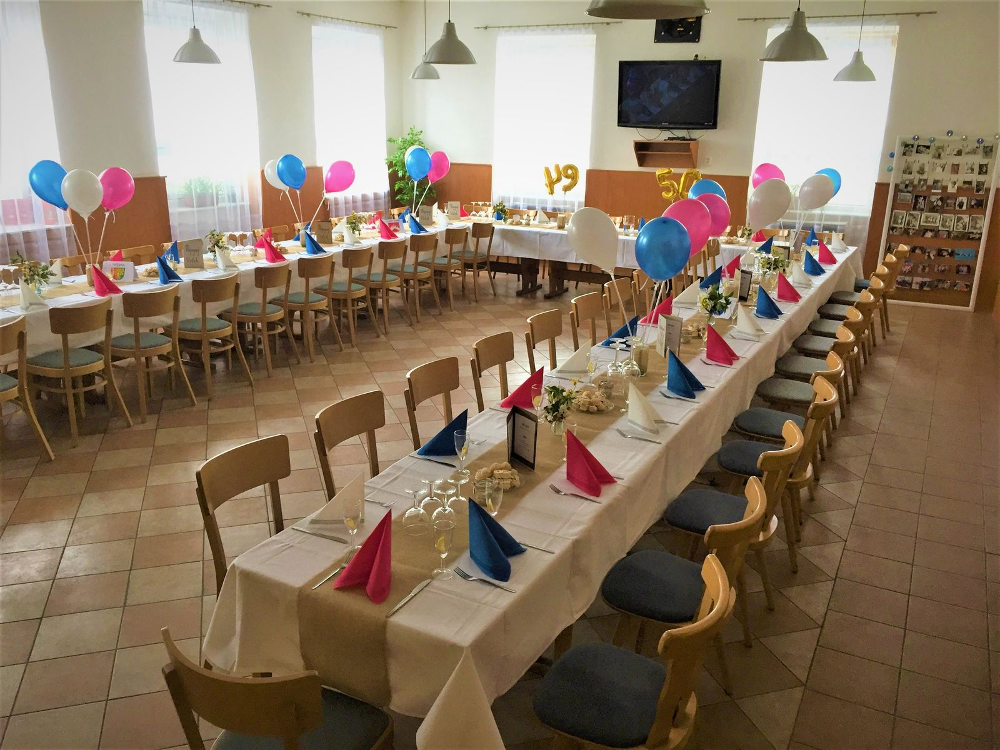
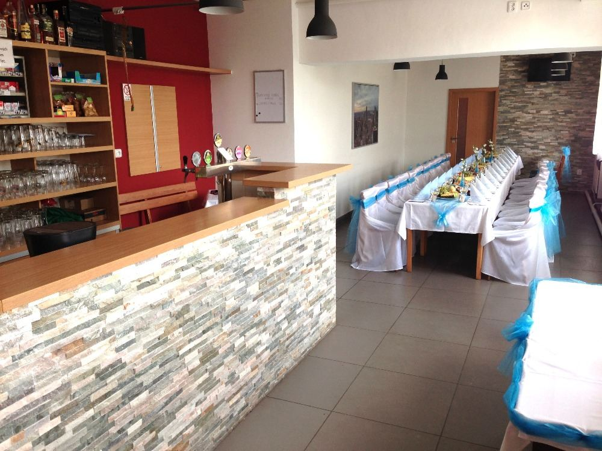
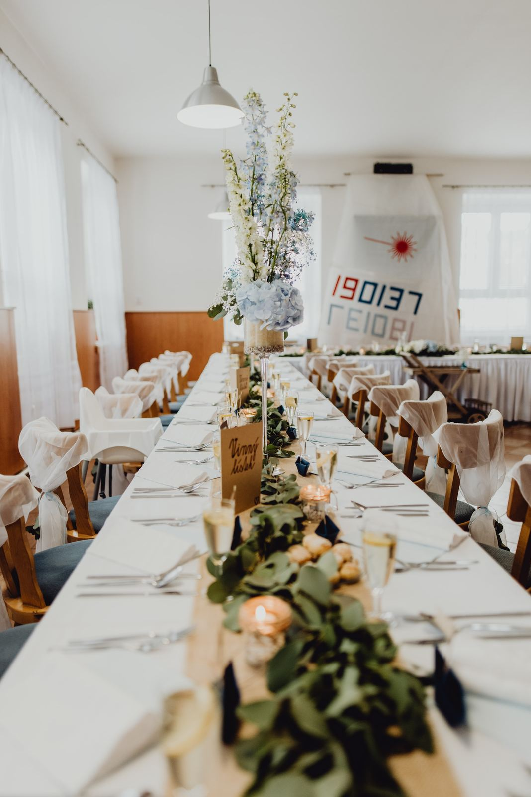

Denní menu
Načítáme menu…
Minutky, speciality, o víkendu kachna a pizza 33 cm. Všechno připravíme i s sebou.


Napište nám počet lidí a čas příjezdu. Menu domluvíme dopředu a stoly prostřeme, než dorazíte. V sále chystáme i svatby, oslavy a rauty, v létě je otevřená krytá zahrádka.





„Výborná kuchyně. Kachna se zelím a knedlíkem mě přesunula do mého dětství.“
„Zastavili jsme zde na oběd po cestě na dovolenou a bylo to dobré rozhodnutí. Obsluha velmi milá, atmosféra příjemná a jídlo rychle na stole…“
„Restaurace je vybavena jídelnou, výčepem a krytou letní zahrádkou, poblíž je dostatek míst k parkování.“
Tři recenze z Googlu jsme vybrali a nechali doslova. Jejich pravost neověřujeme. Všechny recenze
Komenského 589, 679 71 Lysice. Na náměstí, 300 m od zámku. Parkovat můžete hned u nás.
| Pondělí – pátek | 10:00 – 22:00 |
| Sobota | 10:00 – 22:00 |
| Neděle | 10:00 – 21:00 |